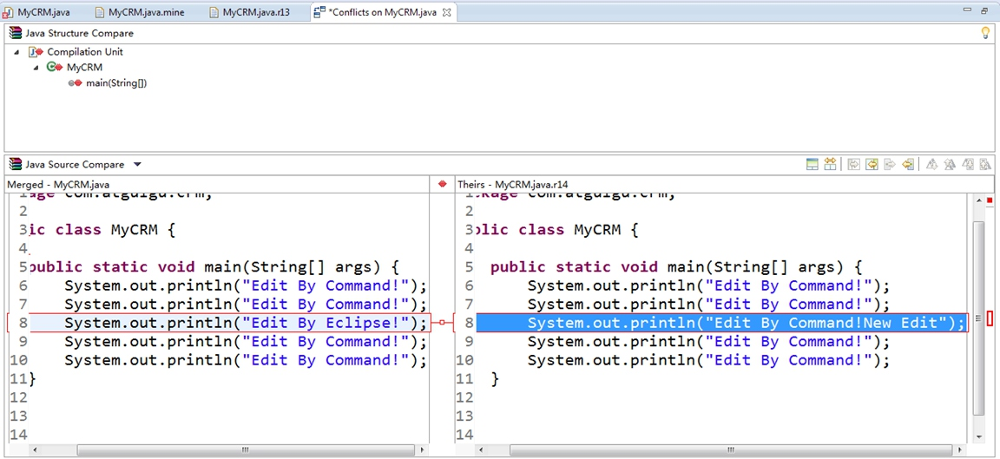

- php笔记2018
- 1 第一章:环境配置
- 2 开发工具介绍与配置
- 3 03.PHP基础语法
- 4 04.变量
- 5 05.数据类型
- 6 06.数据类型转换
- 7 07.变量与数据类型常用函数
- 8 008.常量
- 9 09.运算符
- 10 10.条件结构
- 11 11.循环结构及特殊流程
- 12 12.开启PHP的XDebug或zend_debugger配合Hbuilder进行断点调试
- 13 13.数组
- 14 14.九大超全局数组
- 15 15.函数
- 16 16.常用函数
- 17 17.面向对象
- 18 18.Trait
- 19 19.namespace命名空间
- 20 020.自定义分页类
- 21 021.PHP操作数据库
- 22 022.错误报告级别设置及自定义处理函数
- 23 23.异常处理类 Exception
- 24 24.文件系统
- 25 025.文件的上传与下载
- 26 026.GD库的使用-图片处理及验证码
- 27 027.版本控制-SVN
- 28 028.版本控制-GIT
- 29 029.日期与时间
- 30 30.PHP字符串处理与正则表达式
- 31 032.XML操作
- 32 031.邮件与短信发送
- 33 033.在线支付
- 34 033.HTML协议
- 35 034.会话控制之-Cookei
- 36 035.会话控制之-Session
- 37 036.缓存之-Memcache
- 38 041.redis01-下载安装启动
- 39 042.redis-对于KEY的操作命令(公共命令)
- 40 043.Redis字符串类型的操作
- 41 044.redis-link链表结构(就像自动整理索引值的索引数组. 下标 到 len-1)
- 42 045.redis-set无序集合
- 43 039.配置Apache2.4+PHP7.3+多站点
- 44 MySQL笔记
- 45 ThinkPHP3.1.2笔记
-
46 bootstrap笔记
- 46.1 01. Bootstrap 介绍
- 46.2 Bootstrap 排版样式
- 46.3 03. Bootstrap 表格和按钮
- 46.4 Bootstrap 栅格系统
- 46.5 04. Bootstrap 表单和图片
- 46.6 辅组类和响应式工具
- 46.7 图标菜单按钮组件
- 46.8 输入框和导航组件
- 46.9 路径分页标签和徽章组件
- 46.10 巨幕页头缩略图和警告框组件
- 46.11 进度条媒体对象和Well组件
- 46.12 列表组面板和嵌入组件
- 46.13 模态框插件
- 46.14 下拉菜单和滚动监听插件
- 46.15 标签页和工具提示插件
- 46.16 弹出框和警告框插件
- 46.17 按钮和折叠插件
- 46.18 轮播插件
- 46.19 附加导航插件
- 47 es6
-
48 jquery笔记
- 48.1 jQuery-UI 知问前端--cookie 插件
- 48.2 01.JQUERY入门
- 48.3 02.jQuery基础核心
- 48.4 03.jQuery常规选择器
- 48.5 04.jQuery过滤选择器
- 48.6 05. 基础DOM和CSS操作
- 48.7 06.jQuery DOM节点操作
- 48.8 07. jQuery表单选择器
- 48.9 jQuery基础事件
- 48.10 09. jQuery事件对象
- 48.11 10. jQuery高级事件
- 48.12 11.jQuery动画效果
- 48.13 12.jQuery-Ajax
- 48.14 13. jQuery-Ajax 进阶
- 48.15 14. jQquery工具函数
- 48.16 15. jQuery 插件
- 48.17 jQuery-UI 概述及下载安装
- 48.18 jQuery-UI 知问前端--创建 header 区
- 48.19 jQuery-UI 知问前端--对话框UI
- 48.20 jQuery-UI 知问前端 - 按钮UI
- 48.21 jQuery-UI 知问前端--创建注册表单
- 48.22 jQuery-UI 知问前端--工具提示 UI
- 48.23 jQuery-UI 知问前端 - 自动补全UI
- 48.24 jQuery-UI 知问前端--邮箱自动补全
- 48.25 16. 09 jQuery-UI 知问前端--日历UI
- 48.26 jQuery-UI 知问前端--验证插件
- 48.27 jQuery-UI 知问前端--验证注册表单
- 48.28 jQuery-UI 知问前端--Ajax 表单插件
- 48.29 jQuery-UI 知问前端--Ajax 提交表单
- 48.30 jQuery-UI 知问前端--cookie 插件
- 48.31 jQuery-UI 知问前端--Ajax 登录
- 48.32 jQuery-UI 知问前端--选项卡 UI
- 48.33 jQuery-UI 知问前端--折叠菜单 UI
- 48.34 jQuery-UI 知问前端--编辑器插件
- 48.35 jQuery-UI 知问前端--Ajax 提问
- 48.36 jQquery-UI 知问前端--Ajax 显示
- 48.37 jQuery-UI 知问前端--Ajax 提交评论
- 48.38 jQuery-UI 知问前端--Ajax 显示评论
- 48.39 jQuery-UI 知问前端--Ajax 加载更多
- 48.40 jQuery-UI 知问前端--总结及屏蔽低版 IE
-
49 thinkphp3.2备课笔记
- 49.1 01.ThinkPHP-为什么要使用框架
- 49.2 02.ThinkPHP-安装与配置
- 49.3 03.ThinkPHP--模块化和URL模式
- 49.4 04.ThinkPHP-数据库模型初级
- 49.5 05.ThinkPHP-SQL查询语句
- 49.6 ThinkPHP-SQL连惯操作
- 49.7 07.ThinkPHP-CURD操作
- 49.8 08.ThinkPHP-自动验证
- 49.9 09.ThinkPHP-自动完成
- 49.10 10.ThinkPHP-视图
- 49.11 11.ThinkPHP-模板基础
- 49.12 12.ThinkPHP-内置标签
- 49.13 13.ThinkPHP-标签库
- 49.14 14.ThinkPHP-路由功能
- 49.15 15.ThinkPHP-URL操作
- 49.16 16.ThinkPHP-控制器
- 49.17 17.ThinkPHP-session与cookie
- 49.18 18.ThinkPHP图像处理
- 49.19 19.ThinkPHP-验证码
- 49.20 20.ThinkPHP-文件上传
- 49.21 21.ThinkPHP-多语言
- 49.22 22.ThinkPHP-auth权限控制
- 49.23 23.ThinkPHP-关联模型
- 49.24 24.ThinkPHP-视图模型与分页
- 49.25 25.ThinkPHP-缓存处理
- 49.26 26.ThinkPHP-调试方法
-
50 thinkphp5备课笔记
- 50.1 01.ThinkPHP5.0-安装与配置
- 50.2 0.2ThinkPHP5.0-模块化与URL访问
- 50.3 03.ThinkPHP5.0-URL访问与路由
- 50.4 04.ThinkPHP5.0-请求与向应
- 50.5 05.ThinkPHP5.0-数据库基本操作
- 50.6 06.Thinkphp5.0-数据库操作-增删改
- 50.7 ThinkPHP5.0-数据库查询
- 50.8 ThinkPHP5.0-模型
- 50.9 09.ThinkPHP5.0-验证
- 50.10 10.ThinkPHP5.0-视图和模板
- 50.11 11.ThinkPHP5.0-模板引擎
- 50.12 12.ThinkPHP5.0-错误调试与日志
- 50.13 13.ThinkPHP5.0-扩展
- 50.14 14.ThinkPHP5.0-session与cookie
- 50.15 15.ThinkPHP5.0-验证码
- 50.16 16.ThinkPHP5.0-文件上传
- 50.17 17.ThinkPHP5.0-图片处理
- 50.18 18.ThinkPHP5.0-缓存
- 51 微信小程序
027.版本控制-SVN
开发中的实际问题
- 小明负责的模块就要完成了，就在即将Release之前的一瞬间，电脑突然蓝屏，硬盘光荣牺牲！几个月来的努力付之东流——需求之一：**备份**！
- 这个项目中需要一个很复杂的功能，老王摸索了一个星期终于有眉目了，可是这被改得面目全非的代码已经回不到从前了。什么地方能买到哆啦A梦的时光机啊？需求之二：**代码还原**！
- 小刚和小强先后从文件服务器上下载了同一个文件：Analysis.java。小刚在Analysis.java文件中的第30行声明了一个方法，叫count()，先保存到了文件服务器上；小强在Analysis.java文件中的第50行声明了一个方法，叫sum()，也随后保存到了文件服务器上，于是，count()方法就只存在于小刚的记忆中了——需求之三：**协同修改**！
- 老许是一位项目经理，我会告诉你他把每一个版本都保存一份吗？我会告诉你这些工程里其实有很多文件都是重复的吗？我会告诉你老许为这事删了很多电影吗？——需求之四：**多版本项目文件管理**！
- 老王是另一位项目经理，每次因为项目进度挨骂之后，他都不知道该扣哪个程序员的工资！就拿这次来说吧，有个该死的Bug调试了30多个小时才知道是因为相关属性没有在应用初始化时赋值！可是二胖、王东、刘流和正经牛都不承认是自己干的！——需求之五：**追溯问题代码的编写人和编写时间**！
- 小温这两天幸福的如同掉进了蜜罐里，因为他成功的得到了前台MM丽丽的芳心，可他郁闷的是这几天总是收到QA小组的邮件，要求他修正程序中存在的Bug，可他自己本地电脑上是没有这些Bug的，“难道我的代码被哪个孙子给改了？”。是的，小温没来的时候，丽丽是QA小组小郑的女朋友啊！——需求之六：**权限控制**！
版本控制简介
- 版本控制[Revision control]，最初来源于工程设计领域，是维护工程蓝图的标准做法，能追踪工程蓝图从诞生一直到定案的过程。是一种记录若干文件内容变化，以便将来查阅特定版本修订情况的系统。
- Subversion就是一款实现版本控制的工具软件，通常也称为版本控制器，简称SVN。Subversion是Apache软件基金会组织下的一个项目。
-
Subversion的优良特性
- 目录版本控制: CVS只能追踪单个文件的历史，但是Subversion实现了一个“虚拟”文件系统，可以追踪整个目录树的修改，文件和目录都是版本控制的，结果就是可以在客户端对文件和目录执行移动和复制命令。
- 原子提交:提交要么完全进入版本库，要么一点都没有，这允许开发者以一个逻辑块提交修改。
- 版本控制的元数据:每个文件和目录都有一组附加的“属性”，你可以发明和保存任意的键/值对，属性也会像文件内容一样被纳入版本控制。
- 可选的网络层:Subversion在版本库访问方面有一个抽象概念，利于人们去实现新的网络机制，Subversion的“高级”服务器是 Apache 网络服务器的一个模块，使用 HTTP 的变种协议 WebDAV/DeltaV 通讯，这给了 Subversion 在稳定性和交互性方面很大的好处，可以直接使用服务器的特性，例如认证、授权、传输压缩和版本库浏览等等。也有一个轻型的，单独运行的 Subversion 服务器，这个服务器使用自己的协议，可以轻松的用 SSH 封装。
- 一致的数据处理:Subversion使用二进制文件差异算法展现文件的区别，对于文本(人类可读)和二进制(人类不可读)文件具备一致的操作方式，两种类型的文件都压缩存放在版本库中，差异在网络上双向传递。
- 高效的分支和标签:分支与标签的代价不与工程的大小成比例，Subversion建立分支与标签时只是复制项目，使用了一种类似于硬链接的机制，因而这类操作通常只会花费很少并且相对固定的时间，以及很小的版本库空间。
-
SVN的工作原理：采取客户端/服务器模式——在服务器的版本库中保存项目文件的各个版本，所有参与协同开发的程序员在自己本地电脑上保存一个工作副本。SVN支持程序员将本地副本更新到服务器端的最新版本，也支持将本地副本的最新改变更新到服务器端，而且后面的更新不会覆盖前面的更新，而是作为一个新的版本被保存下来——SVN甚至支持将本地工作副本恢复为服务器端保存的某一个历史版本。
图示:集中式服务器
-
SVN基本操作(解释上图操作原理)
- 检出（checkout）：将一个服务器端创建好的项目整个下载到本地，这是到项目组后参与开发的第一步，只需执行一次。
- 更新（update）：将本地文件更新为服务器端的最新版本，通常为每天上班时或修改公共文件之前执行一次。
- 提交（commit）：将本地修改提交到服务器端。通常每天下班前或每实现一个功能、完成一个模块时执行一次。
Subversion下载安装
下载
下载windows最新版Subversion-1.8.17:https://sourceforge.net/projects/win32svn/
安装
第一步:双击安装程序,安装欢迎界面,直接Next
第二步:还是个欢迎界面........直接Next
第三步:选择Apache版本,如果不知道,直接选2.2,Apache版本去phpinfo();信息页查看.我用的是2.4
运行Apache,查看PHPINFO...我用的是2.4版本,但我试了,选2.2也没事的.


第四步:安装路径,不能用空格,也不能用中文.开发工养成好习惯.
第五步:直接安装吧,点Install.......
第六步:出现完成界面,点Finish按扭关掉就好,就不截图了.
第七步:检测是否已配置操作系统PATH环境,默认是自动配置的
-
打开DOS窗口,输入
svn --version如果成功显示版本则OK,安装正式完成. -
如果显示不成功则配置操作系统环境变量.操作步骤:计算机(右键)-->属性-->高级系统设置-->高级-->环境变量-->系统变量-->选中path-->编辑-->在最后加入(;D:\ProgramFiles\TortoiseSVN\bin),注意安装路径.设置他的作用是在任意位置可以SVN命令.完成后试第一步操作.
服务端操作
创建项目版本库
1.服务端创建一个目录专门用来存储项目,如: D:\SVNREPS
2.在仓库中创建各种项目,如oa,erp,bbs,cms等.
结构如下:
3.为项目创建版本库控制,打开DOS窗口,输入:svnadmin create D:\SVNREPS\bbs创建版本库,成功后多出四个目录,两个文件.
版本库目录结构说明:
启动服务器端程序-注册系统服务
SVN服务器必须处于运行状态才能响应客户端请求，帮助我们管理项目文件。所以我们必须将SVN服务器启动起来。启动SVN 服务器有两种方法，一个是命令行方式，一个是注册Windows服务。
以命令启动
参数: -d表示后台执行,-r表示版本库根目录.
svnserve -d -r D:\SVNREPS
验证服务是否启动
SVN服务监听3690端口，打开一个新的cmd窗口，使用netstat -an 命令查看3690端口是否被监听
命令行方式的缺陷是：只要运行服务器端程序的命令行窗口一关闭，服务就停止了，很不方便，而且每次开机都需要手动启动。
注册Windows服务,开机自动启动
将SVN服务端程序注册为Windows服务，就可以让SVN服务随系统一起启动，克服了命令行方式的不足。
注册Windows服务需要利用XP、2000以上系统自带工具Service Control，执行文件是sc.exe，注意这个命令不是SVN的命令。
参数:sc create 服务名 binpath= "应用程序路径 --service -r 版本库根目录" start= auto depend= Tcpip
sc create SVN binpath= "D:\Subversion\bin\svnserve.exe --service -r D:\SVNREPS" start= auto depend= Tcpip
-
在Win7及以上系统中，运行该命令需要管理员权限，否则会得到如下错误提示
 -
解决的办法是以管理员身份运行cmd命令行窗口即可
-
此时查看当前系统中的服务，可以看到我们刚刚创建的服务，但此时它还没有启动，如果创建失败，需检查sc命令是否正确
-
启动服务的命令格式：
net start SVN -
如果启动失败，那很有可能是binpath中的内容有错误，此时只能将已经创建的服务删除，重新创建。删除服务之前，最好先停止服务。停止服务的命令格式：
net stop SVN -
删除服务的命令格式:
sc delete SVN
此时可以在客户端进行操作(检出,新增文件,提交等),记得修改conf下的svnserve.conf第19行,去掉前面的注释,改成:
anon-access = write让此项目版本库暂时有匿名读写权限,更多权限配置在下一节.
每个项目单独配置权限
- 匿名访问：前已述及。(修改conf下的svnserve.conf第19行,去掉前面的注释,改成:
anon-access = write让此项目版本库暂时有匿名读写权限) - 授权访问
- 要设置授权访问就需要创建用户，并为用户设定权限
- 授权访问的配置:在仓库目录下svnserve.conf文件中设置权限 帐号与权限权配合passwd文件与authz文件.
实例:给服务器D:\SVNREPS\bbs项目配置权限:
# 1.用Notepad++打开:D:\SVNREPS\bbs\conf\svnserve.conf
# 修改第19行(去掉注释),设置匿名访问权限为none,如果不设为none而是注释掉,在后面查看日志会报错.
anon-access = none
# 修改第20行(去掉注释)
auth-access = write
# 修改第27行(去掉注释),意思是指定用户列表文件为同目录下的passwd文件.
password-db = passwd
# 修改第36行(去掉注释),在authz文件中配置用户权限.
authz-db = authz
# 2. 用Notepad++打开:D:\SVNREPS\bbs\conf\passwd 格式:( 用户名 = 密码 ) 每个用户一行
[users]
admin = 123456
huodeming = 654321
sykp = 456123
kp10b = 123456
# 3. 设置权限, 用Notepad++打开:D:\SVNREPS\bbs\conf\authz ,设如下
[groups]
# 这两个是分组,开发组(admin,huodeming) 测试组 sykp
kaifa = admin,huodeming
ceshi = sykp
# 下面是为用户或用户组设置权限,[/]表示项目根目录,开发组权限读写,测试组只能,用户sykp只读,用户kp10b可读写.最后一行 * = 起屏蔽其他用户作用,建议加上此行. 权限的继承性：父目录设置的权限，对子目录同样有效——除非子目录进行了更为具体的设定
[/]
@kaifa = rw
@ceshi = r
sykp = r
kp10b = rw
* =
多个项目(版本库)共享配置
- 在版本库根目录D:\SVNREPS下创建commConf目录
- 将未修改的authz和passwd文件拷贝到commConf目录下
- 修改需要设置权限的版本库的svnserve.conf文件
password-db = ../../commConf/passwd
authz-db = ../../commConf/authz
- 在password中创建用户
[users]
userERP = 123456
userOA = 123456
userCRM = 123456
6.5 在authz中针对不同版本库为不同用户授予权限
# [repository:/baz/fuz]
# @harry_and_sally = rw
# * = r
[ERP:/]
userERP = rw
* =
[OA:/]
userOA = rw
* =
[CRM:/]
userCRM = rw
* =
客户端操作
检出
首先进入自己的工作目录，例如：D:\temp
运行svn checkout命令，命令格式:svn checkout svn://SVN服务器主机地址/具体仓库目录 保存检出内容的目录
实例:检出服务器项目bbs放在自己电脑:D:\temp目录下
# 1.打开DOS窗口, 进入到要检出项目的目录, 或者 D:\temp目录下按住SHIFT键,右键->在此处打开DOS窗口
cd /d D:\temp
# 2.检出项目
svn checkout svn://192.168.3.2/bbs
检出命令及DOS窗口成功提示信息如下:
D:\temp>svn checkout svn://192.168.3.2/bbs
认证领域: svn://192.168.3.2:3690 4feeeee9-b0e4-0942-9d48-04b89d183911
“HDMI5”的密码: ***
认证领域: svn://192.168.3.2:3690 4feeeee9-b0e4-0942-9d48-04b89d183911
用户名: admin
“admin”的密码: ****
取出版本 0。
注意:运行checkout命令后进入D:\temp\bbs目录，看到里面什么都没有。真的什么都没有吗？不是的。检出命令会在这一目录下创建一个隐藏目录.svn，用来保存与服务器交互的重要信息，其中包括从服务器端取回的最新版本信息、文件状态、更新时间等。SVN正是以此为依据判断当前目录中文件的状态。所以这个隐藏目录千万不要删除或修改其中的内容——完全无视它的存在吧。如果服务器端保存的文件可以视为一个“正本”，那么每个开发人员检出到本地目录的文件可以视为“副本”，通常称为工作副本。
增加文件到版本库
检出项目后,我们到D:\temp\bbs目录中增加文件,如index.html,about.html文件,在提交以前,我们需要把新加的文件纳入到版本库中.命令:svn add 文件名
# 1.打开DOS窗口,进入到项目的目录中:
cd /d D:\temp\bbs
# 2.把新创建的文件加入到版本库,输入svn add 如果文件名不知道可以按TAB键提示输入.
svn add index.html
svn add about.html
# 如果有多个文件,就用 svn add *
提交
把客户机项目提交交给服务器版本库,如果是新建的文件,必须先执行svn add 命令把新文件增加到版本库
提交条件:
1.用户要有此项目的写权限(查看权限配置),配置完不需要重启SVN服务，甚至命令行窗口都不需要重新打开
2.提交命令默认要带备注 就是-m参数
# D:\temp\bbs>svn commit -m "测试提交,这是备注"
svn commit -m "测试提交,这是备注"提交后显示内容
D:\temp\bbs>svn commit -m "测试提交,这是备注"
正在增加 about.html
正在增加 index.html
传输文件数据...
提交后的版本为 1。
更新
更新客户端内容,就是把服务器新版本更新到客户端.
思考：更新和检出的相同点和不同点分别是什么？
| 说明 | 检出 | 更新 |
|---|---|---|
| 相同点 | 从服务器端下载最新内容 | |
| 不同点1 | 下载整个项目 | 下载与本地工作副本不同的内容 |
| 不同点2 | 创建.svn目录，使检出目录成为工作副本 | 依赖.svn目录 |
| 不同点3 | 只能操作1次(多次操作自动更新,但不建议用检出命令来更新) | 可以操作多次(建议每次提交前后都更新) |
命令:
# D:\temp\bbs>svn update
svn update
查看日志
使用svn log命令,可以用第三个参数指定具体文件,也可以不加第三个参数.
注意：使用这个命令的前提是设置匿名访问为none，即：anon-access = none，否则会出现“svn: E220001: 条目不可读”错误
回退版本号
工作副本中文件的几种状态
- 没有修改，现行版本:本档案在工作目录中没有被修改，而且自当前版本之后，其他终端也没有任何该文件的修改被提交到服务器，即当前工作副本的版本和服务器端最新版本是一致的。对它执行svn commit和svn update都不会发生任何事。
- 本地修改, 现行版本:这个文件被修改过，但这个修改还没有提交到服务器，而且自当前版本之后，其他终端也没有任何该文件的修改被提交到服务器，所以当前工作副本的版本和服务器端最新版本仍然是一致的。由于有尚未送交回去的本地修改，所以对它的 svn commit会成功提交你的修改，而 svn update 则不会作任何事。
- 没有修改，过时版本:这个文件没有修改，但是版本库中有其他终端提交的修改。此时当前工作副本的版本比服务器端的版本落后了，我们称之为“过时”。对当前文件的 svn commit 不会发生任何事，而 svn update 会让工作目录中的文件更新至最新版本。
- 本地修改，过时版本:服务器端存在没有更新到本地的修改，导致当前版本过时。如果这个文件在本地有未提交的修改，则无法提交，对它执行svn commit 会产生“out-of-date”错误。
此时应该先尝试更新本地文件。更新时SVN会尝试将服务器端的更新与本地文件进行合并，合并的结果有两种可能：一个是服务器端和本地修改位于文件的不同位置，合并成功；另一个是服务器端的修改正好和本地修改位于同一个位置，发生冲突。解决冲突在图形界面客端讲.
将工作副本整体回复到某一个历史版本
假设当前版本为12，想要取回版本9
命令 :svn update --revision 9
# D:\temp\bbs>svn update --revision 0
svn update --revision 0作作提示信息:
D:\temp\bbs>svn update --revision 0
正在升级 '.':
D .project
D index.html
D about.html
更新到版本 0。
也可以将某个文件恢复到某个版本中的状态，同时不涉及其他文件
命令:svn update 文件名 --revision 想要取回的版本号
这里需要注意的是，SVN版本号并不是对某一个文件进行编号，而是对应整个版本库总体状态的一个“快照”，取回某个版本不是取回版本号对应的某个文件，而是整个项目的一个快照。
查看工作副本(客户端项目)信息
使用svn info命令
执行命令及效果提示如下:
D:\temp\bbs>svn info
路径: .
工作副本根目录: D:\temp\bbs
URL: svn://192.168.3.2/bbs
正确的相对 URL: ^/
版本库根: svn://192.168.3.2/bbs
版本库 UUID: 4feeeee9-b0e4-0942-9d48-04b89d183911
版本: 1
节点种类: 目录
调度: 正常
最后修改的作者: admin
最后修改的版本: 1
最后修改的时间: 2019-05-25 08:26:37 +0800 (周六, 2019-05-25)
也可以对单一文件进行查看,如下:
D:\temp\bbs>svn info about.html
路径: about.html
名称: about.html
工作副本根目录: D:\temp\bbs
URL: svn://192.168.3.2/bbs/about.html
正确的相对 URL: ^/about.html
版本库根: svn://192.168.3.2/bbs
版本库 UUID: 4feeeee9-b0e4-0942-9d48-04b89d183911
版本: 1
节点种类: 文件
调度: 正常
最后修改的作者: admin
最后修改的版本: 1
最后修改的时间: 2019-05-25 08:26:37 +0800 (周六, 2019-05-25)
文本最后更新: 2019-05-25 08:47:31 +0800 (周六, 2019-05-25)
校验和: 407a08b3d8838325ca03a46029bd55349d4431c2
在Hbuilder中安装及使用SVN插件
基本上现有IDE开发工具都集成了SVN插件,但一般需要自己安装.就Hbuilder为例:
安装
注意要联网
打开Hbuilder -> 工具(菜单) --> 插件安装 -->钩选SVN -->安装 -->下一步 -->完成
项目检出
打开Hbuilder --> 文件(菜单) --> 导入 -->展开SVN --> 从SVN检出项目 --> 创建新的资源库位置 --> 下一步 --> URL填入SVN服务器地址及项目地址(svn://192.168.3.2/bbs) -->下一步 -->作为新工作空间中的项目检出,填入项目名,建议用项目的文件夹名 --> 下一步 --> 选择检出位置(D:\phpStudy\WWW) -->完成
完成后在Hbuilder中如下效果:
基本操作(更新,提交,还原)
(老师演示,不具体写了)
Hbuilder项目管理器中 --> 选中项目(右键) -->Team -->各种操作.
注意,用工具时,新文件不需要增加到版本库再提交.一般提交时钩选该新文件就行.
共享项目
新项目想要发布到SVN服务器端，可以通过“共享”项目实现
试了下
1.要先在服务端建好相关项目仓库(尽量不要用三方工具建,不然最后报错),不然会失败.
2.共享到服务器后是0版本,需要在开发工具中提交一次后服务端才有项目实际文件.
解决冲突
-
什么情况下会发生冲突
- 两个开发人员，Harry和Sally，分别从服务器端下载了文件A。
- Harry修改之后，A变成了A’，Sally修改之后，A变成了A’’。
- Harry先一步提交，使服务器端文件的版本也变成了A’
- Sally本地的文件A’’已经过时了，此时她已无法提交文件，服务器会要求她先进行一次更新操作。
- 此时Sally的更新操作有两种可能
- Sally所做的修改与Harry不是同一个位置，更新操作尝试合并文件成功。
- Sally所做的修改与Harry恰好是同一个位置，更新操作尝试合并文件失败，发生冲突。
发生冲突后，本地工作副本会发生如下变化
文件A中的内容发生如下改变
public test() {
System.out.println("Edit By Command!");
System.out.println("Edit By Command!");
<<<<<<< .mine
System.out.println("Edit By Eclipse!");
=======
System.out.println("Edit By Command!New Edit");
>>>>>>> .r14
System.out.println("Edit By Command!");
System.out.println("Edit By Command!");
}
其中，从<<<<<<< .mine到=======之间是发生冲突时本地副本的内容。从=======到>>>>>>> .r14是发生冲突时服务器端的最新内容。注意这里r后面的数字是发生冲突时服务器端的版本号，有可能是任何整数值，r14只是一个例子。
同时文件图标变成一个“黄色的！”。
(2)与冲突文件同目录下新增文件，扩展名为.mine，其内容是发生冲突时本地副本的文件内容。
(3)与冲突文件同目录下新增文件，扩展名为.r小版本号，例如MyCRM.java.r13，其内容是冲突发生之前，服务器端的文件内容，可以作为解决冲突的参照。
(4)与冲突文件同目录下新增文件，扩展名为.r大版本号，例如MyCRM.java.r14，其内容是冲突发生时，服务器端的文件内容。
②解决冲突
(1)在冲突文件上点右键→Team→编辑冲突...→(演示操作)

以对比的方式将本地内容与冲突内容显示出来，其中左侧为本地内容，右侧为冲突内容。其中本地内容是可以修改的。
(2)根据需要和实际情况将本地内容更正——这个过程很可能需要牵涉冲突的两位开发人员进行必要的沟通——机器与程序目前还不能完全取代人工智能。更正后文件图标会变成一个“四角形”，同时冲突文件内的<<<<<<< .mine、=======以及>>>>>>> .r14等标记都会被去掉。
(3)在冲突文件上点右键→Team→标记为解决
此时.mine文件和.r版本号文件都会被自动删除，冲突文件的图标变为“*”，表示可以提交。
(4)提交文件，文件图标变为“金色圆柱体”。
在Windows中安装及使用TortoiseSVN
使用SVN独立客户端：TortoiseSVN
TortoiseSVN简介
TortoiseSVN是一个Windows下的版本控制系统Apache™ Subversion®的客户端工具。
TortoiseSVN的优良特性
①外壳集成
TortoiseSVN 无缝地整合进 Windows 的外壳(例如资源管理器)。
②重载图标
每个版本控制的文件和目录的状态使用小的重载图标表示，可以让你立刻看出工作副本的状态。
③图形用户界面
当你列出文件或文件夹的更改时，你可以点击任意版本查看提交注释。也可以看到更改过的文件列表 - 只要双击文件就可以查看更改内容。
提交对话框列出了本次提交将要包括的条目，每一个条目有一个复选框，所以你可以选择包括哪些条目。未版本控制的文件也会被列出，以防你忘记添加新文件。
④Subversion 命令的简便访问
所有的 Subversion 命令存在于资源管理器的右键菜单，TortoiseSVN 在那里添加子菜单。
10.3 TortoiseSVN 的历史
2002年，Tim Kemp 发现 Subversion 是一个非常好的版本管理系统，但是缺乏一个好的图形界面客户端程序。做一个与 Windows 外壳整合的 Subversion 客户端程序的想法是受一个叫 TortoiseCVS 的 CVS客户端程序所启发的。Tim 研究了 TortoiseCVS 的源码并以此为 TortoiseSVN 的基础。他开始运作这个项目，注册了域名 tortoisesvn.org 并且将源码放在了网上。
就在同时， Stefan Küng 正在寻找一个好用的并且免费的版本控制系统。他找到了 Subversion 和TortoiseSVN 的源码。因为 TortoiseSVN 还不能使用，他加入了项目并开始编码。很快，他就重写了现有的大部分代码并开始添加命令和功能，到了某个时段，最初的代码已经都被改写了。
由于 Subversion 变得越来越稳定，它吸引了越来越多用户，他们同时也开始使用 TortoiseSVN 作为Subversion 的客户端程序。用户数量快速增长(并且每天还在增长)。这时候，Lübbe Onken 提出帮助项目提供精美的图标和 TortoiseSVN 的标志。现在他负责照看网站和管理多语言翻译。
下载
- 下载对应操作系统的最新安装包及简体中文语言包: https://tortoisesvn.net/downloads.html
最新版:https://osdn.net/projects/tortoisesvn/storage/1.12.0/Application/TortoiseSVN-1.12.0.28568-x64-svn-1.12.0.msi
- 记得下载语言包:
最新的简体中文语言包:https://osdn.net/projects/tortoisesvn/storage/1.12.0/Language%20Packs/LanguagePack_1.12.0.28568-x64-zh_CN.msi
安装
一直下一就就好了,默认配置就行了.
中文显示
这个工具是集成在操作系统中的.我们随便电脑上打开个文件夹.鼠标右键-->Tortoisesvn-->Settings

如果设置完出去没有中文,重启电脑.
解决冲突
所有图形界面工具解决冲突相似,具体见Hbuilder中解决冲突.
各种操作及解决冲突(演示并带学生操作)